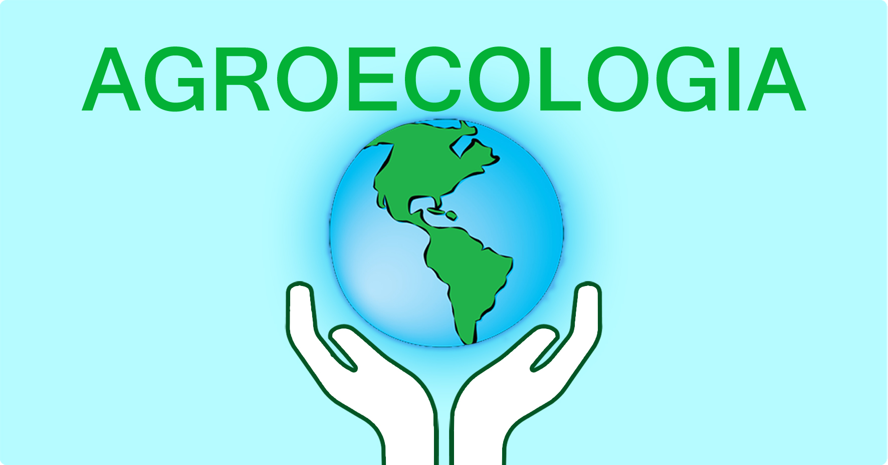
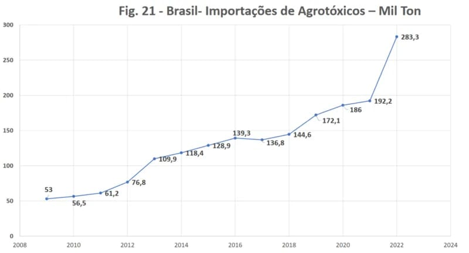
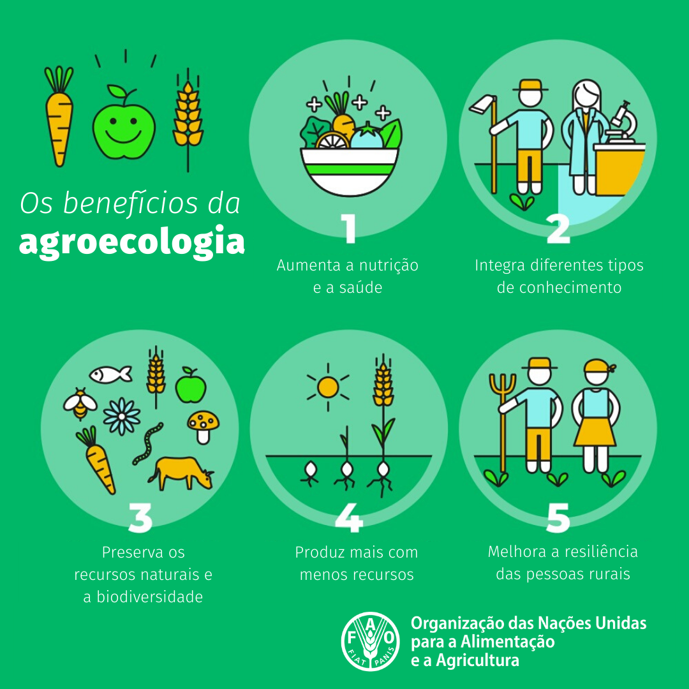
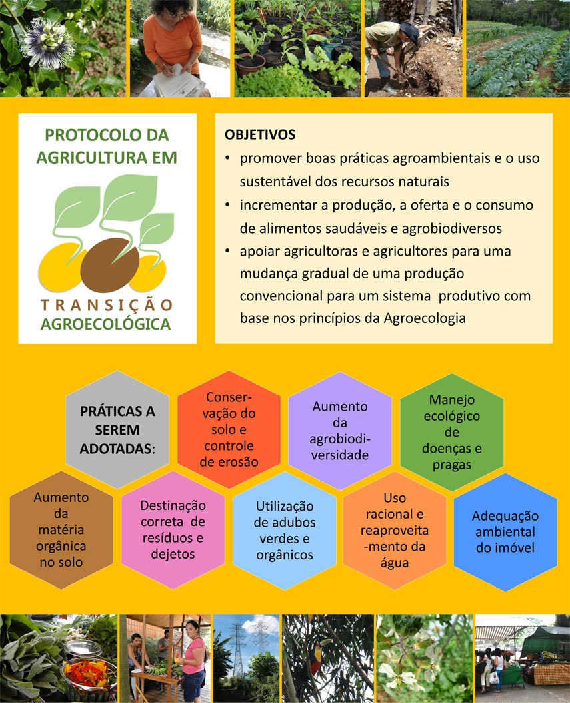
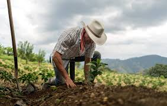
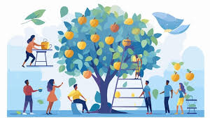
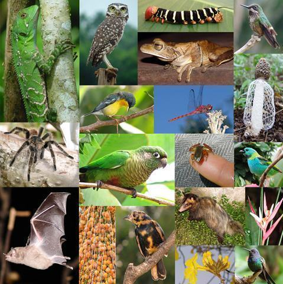
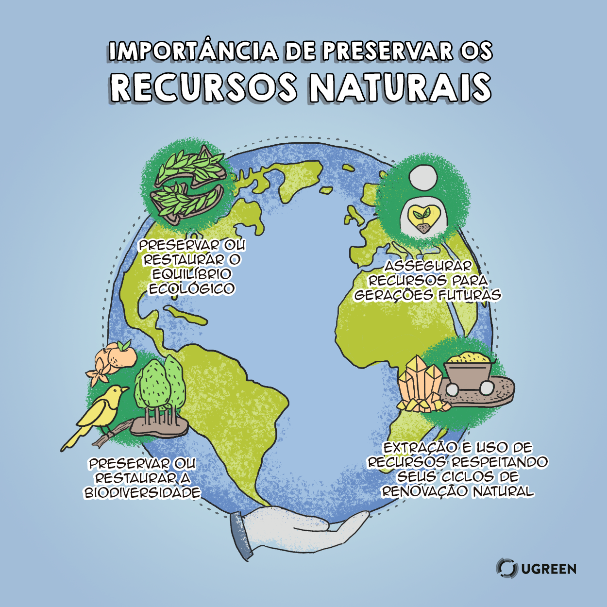

A agroecologia emerge como uma alternativa sustentável aos modelos convencionais de produção agrícola, promovendo práticas que respeitam os ecossistemas e favorecem a biodiversidade. Ao integrar conhecimentos tradicionais e científicos, essa abordagem busca não apenas aumentar a produtividade, mas também garantir a segurança alimentar e o bem-estar social.
A agroecologia fundamenta-se em princípios ecológicos, buscando uma produção que minimize os impactos ambientais e promova a saúde do solo, da água e dos organismos vivos. Entre as práticas agroecológicas, destacam-se a rotação de culturas, o uso de adubos orgânicos e a preservação de espécies nativas. Essas técnicas não apenas aumentam a resiliência das comunidades agrícolas, mas também reduzem a dependência de insumos químicos.

Além disso, a agroecologia é profundamente vinculada à justiça social. Ela promove a inclusão dos pequenos agricultores, valorizando seu conhecimento e fortalecendo suas capacidades. Isso se traduz em uma agricultura mais justa, onde os produtores têm maior autonomia e controle sobre seus processos de produção e comercialização.

Alguns outros objetivos
Produção de alimentos sustentáveis:

Este objetivo vai além da simples produção de comida. Busca-se criar sistemas agrícolas que sejam capazes de produzir alimentos de forma contínua, sem esgotar os recursos naturais. Isso envolve práticas como rotação de culturas, adubação orgânica, controle biológico de pragas, e o uso eficiente da água, garantindo a saúde do solo e a preservação da biodiversidade para gerações futuras. A sustentabilidade também considera os aspectos econômicos, buscando a viabilidade a longo prazo dos sistemas produtivos.
Equidade social:

A agroecologia reconhece que a produção de alimentos impacta diretamente as comunidades rurais. Este objetivo visa garantir justiça social, promovendo a participação justa e equitativa dos agricultores na cadeia produtiva, valorizando o trabalho e o conhecimento tradicional, e assegurando o acesso à terra e aos recursos para todos. Busca-se também reduzir as desigualdades e promover a inclusão social, garantindo que os benefícios da produção agrícola sejam compartilhados de forma justa.
Biodiversidade:

A agroecologia valoriza a diversidade de espécies vegetais e animais nos sistemas agrícolas. Em vez de monoculturas, que são vulneráveis a pragas e doenças, a agroecologia promove a integração de diferentes culturas, criando sistemas mais resilientes e complexos. A biodiversidade também contribui para a saúde do solo, a polinização das plantas e o controle natural de pragas, reduzindo a necessidade de insumos externos.
Conservação de recursos naturais:

A preservação da água, do solo e de outros recursos naturais é fundamental para a sustentabilidade. A agroecologia busca minimizar o impacto da agricultura sobre o meio ambiente, utilizando práticas que reduzam a erosão do solo, conservem a água e protejam a biodiversidade. Isso inclui o uso de técnicas como o plantio direto, a cobertura do solo e a gestão integrada da água.
Redução do uso de insumos externos:
A agroecologia busca minimizar o uso de pesticidas, fertilizantes e outros produtos sintéticos, que podem causar danos ao meio ambiente e à saúde humana. Em vez disso, promove o uso de métodos naturais de controle de pragas e doenças, como o controle biológico e a rotação de culturas, e a utilização de adubos orgânicos, que melhoram a fertilidade do solo de forma sustentável.
Resiliência dos sistemas agrícolas:
Sistemas agrícolas resilientes são capazes de resistir e se recuperar de choques externos, como mudanças climáticas, pragas e doenças. A agroecologia busca criar sistemas mais robustos e adaptáveis, utilizando a biodiversidade e a diversidade de práticas agrícolas para aumentar a capacidade de resposta a eventos inesperados.
Melhoria da qualidade de vida:
O objetivo final da agroecologia é melhorar a qualidade de vida das comunidades rurais e garantir a segurança alimentar para todos. Isso inclui a promoção da saúde, a geração de renda e o fortalecimento das comunidades locais, criando sistemas agrícolas que sejam socialmente justos e ambientalmente sustentáveis.
Incentivando Práticas Agroecológicas
1. Educação e Conscientização
Oficinas e Palestras: Organizar eventos para ensinar os benefícios da agroecologia e técnicas como compostagem e rotação de culturas.
Vídeos e Materiais Didáticos: Criar vídeos explicativos e folhetos informativos para distribuir nas comunidades.
2. Incentivos Financeiros
Subsídios para Insumos: Propor que o governo ofereça ajuda financeira para compra de sementes e adubos orgânicos.
Premiações: Criar um concurso para reconhecer agricultores que adotam práticas sustentáveis, com prêmios que incentivem a continuidade.
3. Apoio Prático
Consultoria Técnica: Disponibilizar agrônomos para ajudar na implementação de técnicas agroecológicas nas propriedades.
Grupos de Agricultores: Formar grupos para troca de experiências e apoio mútuo na adoção de novas práticas.
4. Políticas de Apoio
Incentivos Fiscais: Sugerir ao governo que ofereça isenções fiscais para agricultores que praticam a agroecologia.
Campanhas Públicas: Criar campanhas que promovam o consumo de produtos agroecológicos.
5. Envolvimento da Comunidade
Feiras e Mercados Locais: Organizar feiras para que os agricultores possam vender seus produtos diretamente aos consumidores.
Programas Escolares: Implementar programas de educação ambiental nas escolas para ensinar crianças sobre agroecologia.
6. Monitoramento e Avaliação
Relatórios de Impacto: Criar um sistema de acompanhamento para medir os resultados das práticas agroecológicas e compartilhar com a comunidade.
A adoção de práticas agroecológicas é essencial para a saúde do meio ambiente e a qualidade de vida nas comunidades. Com educação, incentivos e apoio, podemos transformar a agricultura e construir um futuro mais sustentável.
A agroecologia se apresenta como uma solução viável e necessária para os desafios contemporâneos da agricultura, que enfrenta questões como a degradação ambiental e a desigualdade social. Ao promover práticas que respeitam o meio ambiente e valorizam os saberes locais, a agroecologia não apenas contribui para a produção de alimentos de forma sustentável, mas também para a construção de sociedades mais justas e resilientes. Assim, investir na agroecologia é investir em um futuro mais saudável para todos.
Nomes:
Ângela dos Santos Aguiar, Henrique Vieira Neto, José Felipe Bermudez de Campos, Maria Eduarda Sousa Tomé da Silva & Vitória da Costa Back